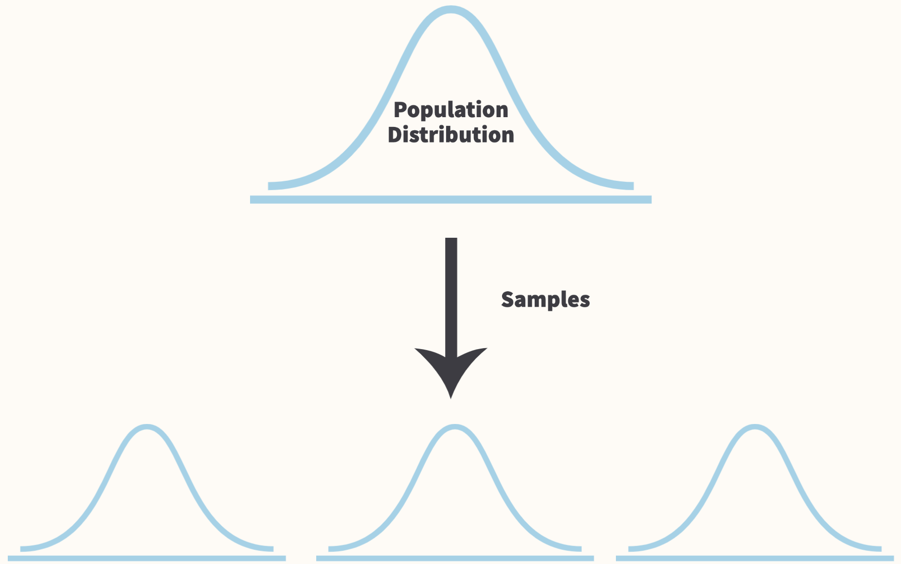

Statistical and Programming Primers
Some things about me:
Round Robin!
Psychometrics, or quantitative psychology, is the disciplinary home of a set of statistical models and methods that have been developed primarily to summarize, describe, and draw inferences from empirical data collected in psychological research. (Jones & Thissen, 2007)
Test Theory: A mixture of theoretical and statistical models that have been developed to advance educational and psychological measurement.
Latent Variable Models: A family of statistical models that explain statistical dependencies among sets of observed random variables (e.g. survey responses) by appealing to variation in a smaller set of unobserved (latent) variables.
There are three major test theories in Psychometrics:
The above theories have introduced and further refined the theories of test validity and test reliability.
\[\text{Observed Score} = \text{True Score} + \text{Error}\]
\[\text{Observed Scored} = \mu + E_{rater} + E_{item} + E_{rater\times{}item}\] * G-Theory really furthered the development of reliability theory by introducing different types of reliability indices and drawing a distinction between relative and absolute test score comparisons.
IRT is a modern measurement theory that focuses on the measurement characteristics of the individual items that make up an assessment.
Unlike CTT and G-Theory, IRT estimates measurement characteristics of the individual items independently from the abilities of the test takers—this is a big plus!
\[p(x_{ij} = 1 |\theta_{i},b_{j},a_{j})=\frac{1}{1 + e^{-a_{j}(\theta_{i}-b_{j})}}\]
A family of statistical models that relate covariation in observable variables (e.g. item responses) to latent variables (e.g. psychological constructs).
Essentially allows one to use observed measurements to infer something about an unobservable construct.
| Latent Variable Distribution | Continuous | Categorical |
|---|---|---|
| Continuous | Factor Analysis | Item Response Theory |
| Categorical | Latent Profile Analysis | Latent Class Analysis |
flowchart LR
subgraph cluster_develop[Developing the Scale]
direction LR
a1[Measurement <br/> framework]-->a2[Generate <br/> Items]<-->a3[Evaluate <br/> Preliminary Items]
end
subgraph cluster_test[Testing the Scale]
direction LR
b1[Pilot the <br/> new scale]<-->b2[Analyze the <br/> pilot data]
b2-->b3[Administer <br/> final scale]-->b4[Analyze the <br/> final data]
end
cluster_develop-->cluster_testStatistics is hard, especially when effects are small and variable and measurements are noisy. (McShane et al., 2019)
\[\underbrace{y_{i}=\beta_{0} + \beta_{1}x_{i} + \epsilon_{i}}_{\text{Generative Model}}\]
\[\underbrace{\epsilon_{i}\stackrel{iid}{\sim}N(0, \sigma^{2})}_{\text{Parametric Assumptions & Selection Mech.}}\]
\[y_{i}=\beta_{0} + \beta_{1}x_{i} + \epsilon_{i}\]
\[\to\]
\[\underbrace{f_{Y|X}(y_{i}|x_{i})}_{\text{Conditional}\\ \;\;\;\;\text{PDF}}\overbrace{\stackrel{iid}{\sim}}^{\;\;\text{Dist.}\\\text{Assump.}}\underbrace{N(\beta_{0} + \beta_{1}x_{i}, \sigma^{2})}_{\text{Normal PDF}}\]
Probability theory is a mathematical construct used to represent processes involving randomness, unpredictability, or intrinsic uncertainty.
Probability theory is a model! It allows for us to deal with the uncertainty that comes from being unable to measure every little thing that may be related to our outcome.
Joint and conditional probability describe how the probabilities of two different events are related.
Joint probability tells us the probability that two events will both occur:
Conditional probability tell us how the probability of one event changes given that another event already occurred:
| Hire | Turndown | |
|---|---|---|
| Fail | 0.033 | 0.149 |
| Pass | 0.436 | 0.291 |
| Pass+ | 0.071 | 0.020 |
| Hire | Turndown | |
|---|---|---|
| Fail | 0.182 | 0.818 |
| Pass | 0.600 | 0.400 |
| Pass+ | 0.778 | 0.222 |
| Hire | Turndown | |
|---|---|---|
| Fail | 0.061 | 0.323 |
| Pass | 0.808 | 0.633 |
| Pass+ | 0.131 | 0.044 |
\(P(A \cap B)=P(A|B)P(B)\)
\(P(A \cap B) = P(A)P(B)\)
\(\begin{equation}\begin{aligned} P(A|B) &= \frac{P(A)P(B)}{P(B)} \\ &= P(A) \end{aligned}\end{equation}\)
\(P(B|A) = \frac{P(A|B)P(B)}{P(A)}\)
We can summarize the probabilities of random variables using two related probability functions: the Probability Mass (Density) Function and the Cumulative Distribution Function.
We often need to summarize the information contained in marginal and joint distributions. We can do this using several different summary measures:
The expectation, \(E\), of a random variable is the value we would get if we took the mean over an infinite number of realizations of a random variable (if we conducted the same experiment an infinite number of times).
The expectation operator is a function that takes a random variable as an input and outputs a real number, the expected value of random number: \(E[X]=\sum_{x}xf_{x}(x)\).
Some useful properties:
The variance, \(\sigma^{2}\), of a random variable tells us about the spread of its distribution. The larger the variance the more unpredictable the random variable.
The standard deviation, \(\sigma\), is the square root of the variance. It gives us the same information as the variance, but the standard deviation can be interpreted using the scaling of the random variable.
Some useful properties:
The positive covariance between two variables, X and Y, tells us if large values of X tend to occur with large values of Y (and small with small).
The negative covariance tells us if large values of X tend to occur with small values of Y and if small values of X tend to occur with large values of Y.
The correlation is just the standardized version of covariance: \(\frac{Cov[X, Y]}{\sigma_{x}\sigma_{y}}\)
Some useful properties:
The conditional expectation of a random variable, \(E[Y|X=x]\), tells us the expected variable of one random variable given the value of another random variable.
Conditional expectations allow us to describe how the expected variable of one variable changes once we condition on the observed value of another random variable. This is exactly what linear regression does!
Some useful properties:
Every statistical model we will use assumes that our sample data are independently and identically distributed—the iid assumption.
The iid assumption is basically a simplifying assumption that assumes two things:

The goal of statistical inference is to estimate population parameters (like the mean and variance) of a population distribution from a sample. Sample statistics allow us to accomplish this goal.
Sample statistics are functions of our sample data that estimate some feature of a random variable’s population distribution:
Because a sample statistics is a function of a random variable, it is therefore also a random variable with its own distribution: Sampling Distribution.
Imagine drawing 1,000 iid samples of applicant scores on a selection assessment. For each sample you compute the sample mean. You could approximate the sampling distribution of the mean by making a histogram using the 1,000 sample means you computed.
set.seed(42)
population_mean <- 10
population_variance <- 5
number_samples <- 1000
sample_size <- 50
sample_mean <- numeric()
for(i in 1:number_samples) {
x <- rnorm(
n = sample_size,
mean = population_mean,
sd = sqrt(population_variance)
)
sample_mean_1 <- mean(x)
sample_mean <-
c(sample_mean,
sample_mean_1)
}\[Z = \frac{\bar{X}-E[X]}{SE_{\bar{X}}}=\frac{\sqrt{n}(\bar{X}-\mu)}{\sigma}\]
\[Z \xrightarrow{d} N(0, 1)\]
We have all the tools we need to start making inferences from the data to the population!
Example: Here is the population model we will be making inferences about:
\[Y = \beta_{0}+\beta_{1}X_{1}+\beta_{2}X_{2}+\epsilon\]
\[\epsilon \sim N(0, \sigma^{2})\]
# Set the parameters
set.seed(32) # Seed for reproducibility
n <- 500 # Sample size
b0 <- 2 # Population Regression Intercept
b1 <- 1 # Population Regression Slope
sigma <- 4 # Population variance
x1 <- sample(
1:5,
size = n,
replace = TRUE,
prob = c(.10, .15, .15, .30, .30)
)
x2 <- sample(
1:5,
size = n,
replace = TRUE
)
# Generate dependent var.
y <- rnorm(
n = n,
mean = b0 + b1*x1 + 0*x2,
sd = sqrt(sigma)
)
mod <- lm(y ~ x1 + x2) # Estimate model
Call:
lm(formula = y ~ x1 + x2)
Residuals:
Min 1Q Median 3Q Max
-5.9736 -1.3566 -0.0707 1.3735 7.1174
Coefficients:
Estimate Std. Error t value Pr(>|t|)
(Intercept) 1.68456 0.32556 5.174 3.32e-07 ***
x1 0.95949 0.06873 13.960 < 2e-16 ***
x2 0.11486 0.06581 1.745 0.0815 .
---
Signif. codes: 0 '***' 0.001 '**' 0.01 '*' 0.05 '.' 0.1 ' ' 1
Residual standard error: 2.034 on 497 degrees of freedom
Multiple R-squared: 0.2859, Adjusted R-squared: 0.283
F-statistic: 99.48 on 2 and 497 DF, p-value: < 2.2e-16
Call:
lm(formula = y ~ x1 + x2)
Residuals:
Min 1Q Median 3Q Max
-5.9736 -1.3566 -0.0707 1.3735 7.1174
Coefficients:
Estimate Std. Error t value Pr(>|t|)
(Intercept) 1.68456 0.32556 5.174 3.32e-07 ***
x1 0.95949 0.06873 13.960 < 2e-16 ***
x2 0.11486 0.06581 1.745 0.0815 .
---
Signif. codes: 0 '***' 0.001 '**' 0.01 '*' 0.05 '.' 0.1 ' ' 1
Residual standard error: 2.034 on 497 degrees of freedom
Multiple R-squared: 0.2859, Adjusted R-squared: 0.283
F-statistic: 99.48 on 2 and 497 DF, p-value: < 2.2e-16\[\text{P value} = P(Data|Model)\]
Most statistical programming languages report a P value based on the assumption that the effect under investigation is equal to 0.
The P value of 0.082 for \(X_{2}\) can be interpreted as: “Assuming all of our model assumptions are true including no effect of \(X_{2}\), the probability of seeing a value as or more extreme than 0.115 is 0.082.
\[T = \frac{Est. - H_{0}}{SE_{est.}}\]
\[\text{P Value}=2\times P(|T| \geq|t| \mid H_{0}=True, Model = True) \]
# X2 coefficient and SE
x2_beta <- summary(mod)$coef[3, 1]
x2_se <- summary(mod)$coef[3, 2]
# Test statistics
test_stat_0 <- (x2_beta - 0) / x2_se # Null = 0
test_stat_25 <- (x2_beta - .25) / x2_se # Null = .25
# P-value for x2 when null hypothesis = 0 (using a central T distribution)
pnorm(abs(test_stat_0), mean = 0, sd = 1, lower.tail = FALSE) * 2 |>
round(3)[1] 0.08092986# P-value for x2 when null hypothesis = .25
pnorm(abs(test_stat_25), mean = 0, sd = 1, lower.tail = FALSE) * 2 |>
round(3)[1] 0.04001684Confidence interval: A range of effect sizes whose tests produced \(\text{P Value}\gt .05\) and thus are considered to be more compatible with the data compared to effect sizes outside of the interval GIVEN that the model and its assumptions are all correct.
Confidence Interval: A range of values that contain the population value, estimated by a sample statistic (e.g. regression coefficient), with a given probability—usually 95%.
\[P(\hat{\beta}-SE_{\hat{\beta}}\times C\leq\beta\leq\hat{\beta}+SE_{\hat{\beta}}\times C)=.95\]
confint_mod <- confint(mod) # Creates 95% confidence intervals
x1_coef <- summary(mod)$coef[2, 1]
x1_se <- summary(mod)$coef[2, 2]
x1_lower <- confint_mod[2, 1]
x1_upper <- confint_mod[2, 2]
x1_lower_pvalue <- pnorm(x1_coef, mean = x1_lower, sd = x1_se, lower.tail = F)*2
x1_upper_pvalue <- pnorm(x1_coef, mean = x1_upper, sd = x1_se, lower.tail = T)*2# A tibble: 1 × 6
X1_COEF X1_STD_ERROR X1_LOWER_CI X1_UPPER_CI X1_LOWER_P X1_UPPER_P
<dbl> <dbl> <dbl> <dbl> <dbl> <dbl>
1 0.959 0.069 0.824 1.10 0.049 0.049# Set the parameters
set.seed(3342) # Seed for reproducibility
n <- 500 # Sample size
b0 <- 2 # Population Regression Intercept
b1 <- 1 # Population Regression Slope
sigma <- 4 # Population variance
x1 <- sample(
1:5,
size = n,
replace = TRUE,
prob = c(.10, .15, .15, .30, .30)
)
x2 <- sample(
1:5,
size = n,
replace = TRUE
)
ci_vec <- numeric() # Create CI vector
for(i in 1:500) {
# Generate dependent var.
y <- rnorm(
n = n,
mean = b0 + b1*x1 + 0*x2,
sd = sqrt(sigma)
)
mod <- lm(y ~ x1 + x2) # Estimate model
# Get CI
ci_mod <- confint(mod)
ci_lower <- ci_mod[2, 1]
ci_upper <- ci_mod[2, 2]
# Does CI contain pop. par -- Yes or No
coverage <- ci_lower <= b1 & b1 <= ci_upper
ci_vec <- c(ci_vec, coverage)
}